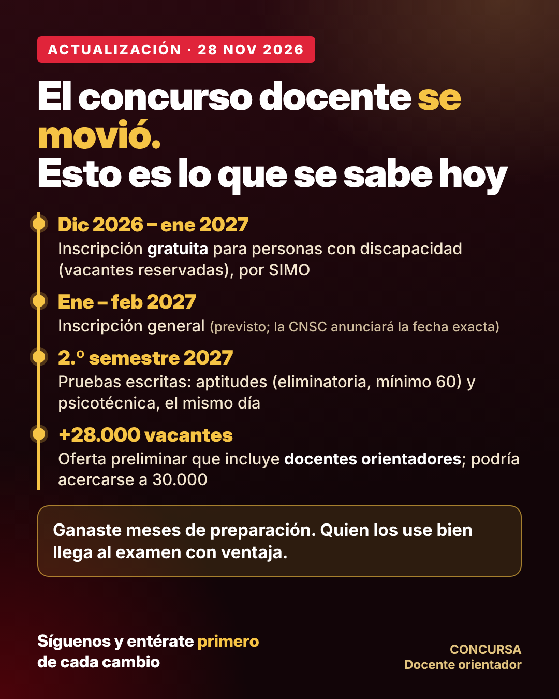

El concurso docente se movió: lo que se sabe hoy
Actualizado el 28 de noviembre de 2026
- Diciembre 2026 a enero 2027: inscripción gratuita para personas con discapacidad que aspiran a vacantes reservadas, por SIMO.
- Enero a febrero 2027: inscripción general. Es una fecha prevista: la CNSC anunciará el día exacto por sus canales oficiales.
- Segundo semestre 2027: pruebas escritas. La de aptitudes es eliminatoria (mínimo 60 para docentes) y se presenta el mismo día que la psicotécnica, sin calculadora.
- Más de 28.000 vacantes en la oferta preliminar, con plazas de docente orientador. La cifra podría acercarse a 30.000 cuando se publique la OPEC definitiva.
Verifica siempre en SIMO y en cnsc.gov.co antes de tomar decisiones. Si la fecha se movió, tienes meses extra de preparación: úsalos.
Síguenos en Facebook: un reto diario Guía gratuita de la pruebaFuentes: El Espectador · El Colombiano · Noticias RCN · IFM Noticias